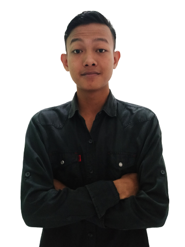

Halo! Namaku
Muhammad Asyraf
Mahasiswa IT dengan pengalaman di berbagai bidang. Fokus dalam Website Development, serta berpengalaman di bidang Public Relation.

Mahasiswa IT dengan pengalaman di berbagai bidang. Fokus dalam Website Development, serta berpengalaman di bidang Public Relation.
Mahasiswa Informatika tahun kedua yang cukup aktif dalam organisasi maupun dunia karir. Memiliki beberapa pengalaman profesional dengan pencapaian yang bagus.
Nama
TTL
Umur
Alamat
Interest
: Muhammad Asyraf
: Magetan, 28 Juni 2004
: 19 Tahun
: Jl.Raya Medokan Sawah No.70a Rungkut
: Website Development, Digital Marketing, Public Relation
Menjadi customer service perusahaan, serta handle komunitas internal. Marketing promotion untuk setiap event ataupun produk melalui berbagai platform.
Narahubung antara internal dengan komunitas luar. Listing komunitas external untuk menjadi partnership dan menjadi MC pada beberapa event.
Membuat content planning untuk konten-konten di instagram organisasi. Berhasil mendapatkan insight yang cukup besar baik followers maupun interaction.
S1 - Informatika
IPA
Junior Web Developer
Mengikuti berbagai pelatihan juga sertifikasi di bidang Website Development selama dua tahun masa kuliah. Memiliki banyak pengalaman dalam meningkatkan sofskill dengan mengikuti beberapa volunteer maupun internship.
Jl.Raya Medokan Sawah No.70a, Medokan Ayu, Rungkut, Surabaya
+62 813 5725 1810
mohasyraf28@gmail.com